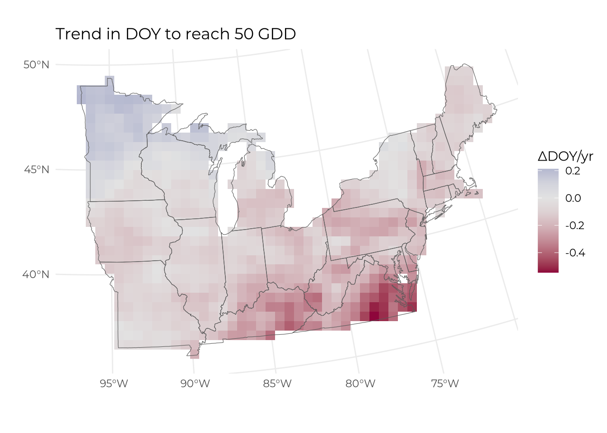
Spatial Trends Through Time
The goal is to understand spatial and temporal trends in phenology using data on the DOY that various threshold GDD are reached in the Northeastern US.
Caution
All results presented here are extremely preliminary and subject to change!
Data
For this example, I’ll use the 50 GDD threshold data. For the sake of computational efficiency for this example, I’m going to transform the raster to a CRS in meters and downscale to a resolution of 50km
Pixel-wise regression
A simple option is to run a regression for every pixel in the map, with one data point per year per GDD threshold. We can then map the slopes easily (Figure 1).
If we wish to make inferences based on these slopes, we may wish to know which are significantly different from zero. Because we are dealing with thousands of p-values ({r} nrow(as_tibble(gdd_doy_stack_50, na.rm = TRUE)) to be specific) and thus the probability of false-positives is quite high. Whenever making multiple comparisons like this, it is necessary to control for either family-wise error rate (more stringent) or false discovery rate (less stringent).

Assumptions
✅ Data are i.i.d. (no temporal autocorrelation)
There doesn’t appear to be any temporal autocorrelation in the residuals (Figure 3), so the data can be treated as i.i.d.
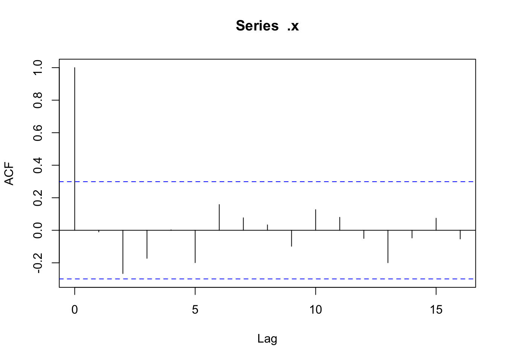
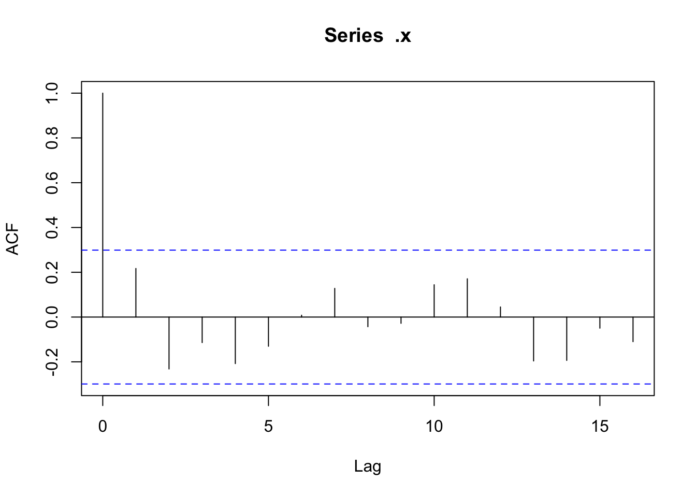
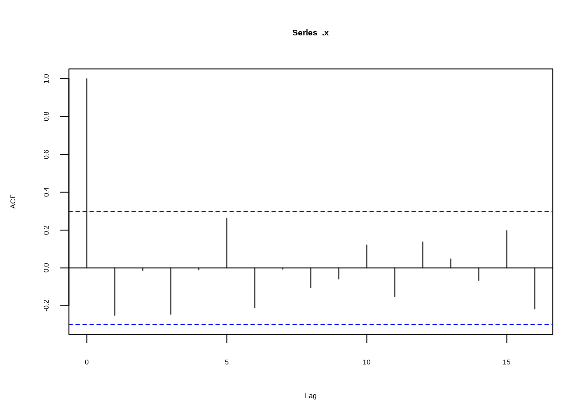

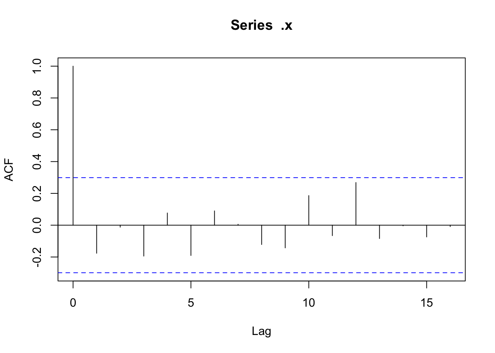
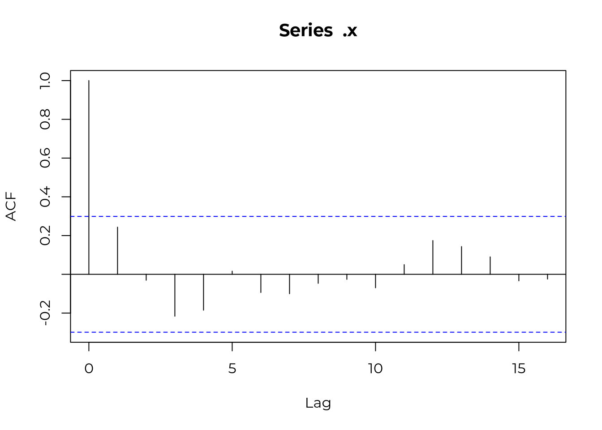
✅ Normality
Residuals are fairly well behaved despite the data being bounded at 0 and 365. Non-normality is not an issue (Figure 4, Figure 5).
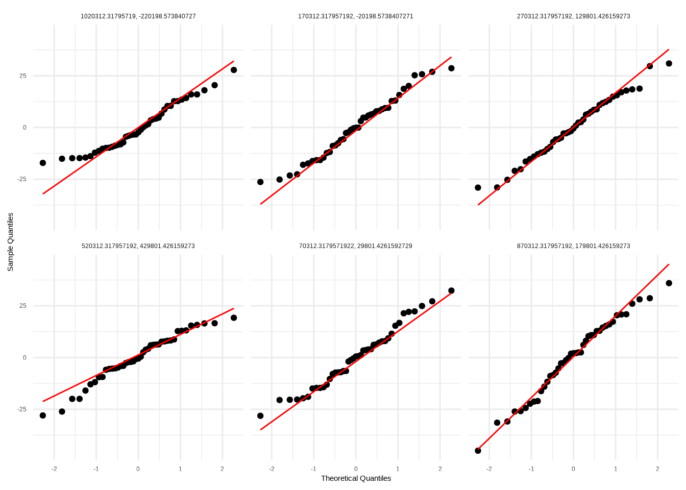
Warning: `cols` is now required when using `unnest()`.
ℹ Please use `cols = c(resid)`.`stat_bin()` using `bins = 30`. Pick better value with `binwidth`.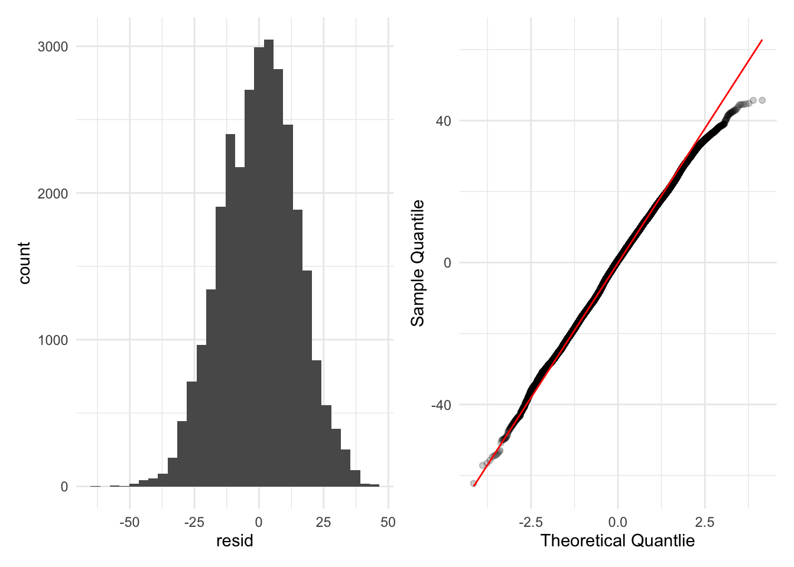
❌ Linearity
These data do not meet the assumption that there is a linear relationship between the response (DOY) and the predictor (time), in my opinion. Figure 6 shows a few examples of what the time series look like. One could treat the non-linear fluctuation in these points as error around a trend, but given that we know there are decadal-scale climate fluctuations in addition to a warming trend, I’m not sure that is an appropriate assumption.
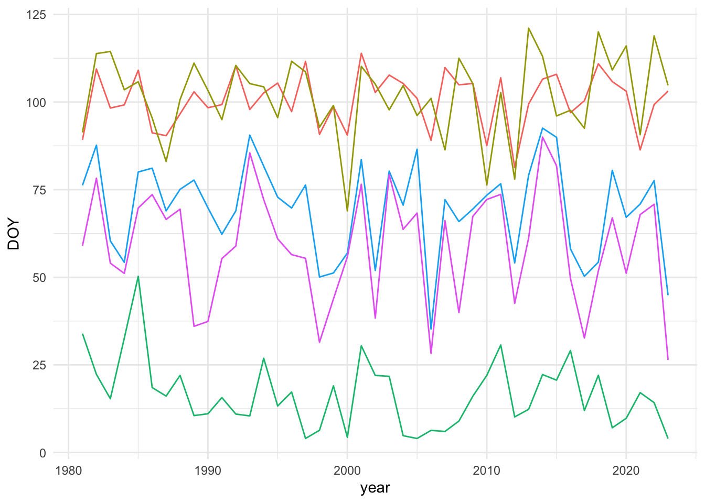
❌ Independence of multiple comparisons (spatial autocorrelation)
While not correcting p-values for multiple comparisons leads to high rates of false positives. On the other hand, treating multiple tests as fully independent over-corrects and leads to overly conservative p-values (Derringer 2018). I think it is safe to assume that pixels near each other are more likely to have similar DOY values than pixels far apart, and therefore the hypothesis tests for each pixel are not independent.
False discovery rate corrections typically assume multiple tests are independent (although the "BY" method described in ?p.adjust.methods does not) and base their corrections on the number of p-values which is a function of the somewhat arbitrary resolution of the data. Down-scaling (as I’ve done for this example) or up-scaling therefore changes the statistical significance of trends which doesn’t make sense since only the representation of the trends is changing.
Alternative: Spatial GAMs
Generalized Additive Models (GAMs) are an alternative method that involves fitting penalized splines to data. GAMs might solve our two problems above by allowing for non-linear relationships (both through time and across space) and by accounting for un-modeled short range spatial autocorrelation with a method called neighborhood cross-validation (Wood 2024). Importantly, this approach uses all of the data in a single model rather than being applied pixel-wise.
GAMs fit penalized smooths to data capturing non-linear relationships with a statistically optimized amount of wiggliness. Two-dimensional smoothers can be used to capture spatial variation in data (with dimensions of lat/lon). Furthermore, we can model complex interactions including three-way interactions between latitude, longitude, and time.
m_reml <- mgcv::bam(
DOY ~
1 ti(x, y, bs = "cr", d = 2, k = 25) +
2 ti(year_scaled, bs = "cr", k = 10) +
3 ti(x, y, year_scaled, d = c(2,1), bs = "cr", k = c(25, 10)),
data = gdd_df,
method = "REML"
)
as_flextable(m_reml)- 1
-
Two-dimensional tensor-product smoother for space where both dimensions (lat and lon) are fit using a cubic regression spline (
"cr") with 25 knots. - 2
- One-dimensional cubic regression spline with 10 knots for change over time
- 3
- The interaction between the 2D tensor product for space and the smooth for time
Component | Term | Estimate | Std Error | t-value | p-value | |
|---|---|---|---|---|---|---|
A. parametric coefficients | (Intercept) | 56.990 | 0.077 | 740.086 | 0.0000 | *** |
Component | Term | edf | Ref. df | F-value | p-value | |
B. smooth terms | ti(x,y) | 23.759 | 23.995 | 5,369.774 | 0.0000 | *** |
ti(year_scaled) | 8.961 | 9.000 | 229.566 | 0.0000 | *** | |
ti(x,y,year_scaled) | 159.986 | 190.308 | 15.449 | 0.0000 | *** | |
Signif. codes: 0 <= '***' < 0.001 < '**' < 0.01 < '*' < 0.05 | ||||||
Adjusted R-squared: 0.807, Deviance explained 0.808 | ||||||
-REML : 129959.641, Scale est: 189.781, N: 32078 | ||||||
From Table 1, we can conclude that there is significant spatial variation in DOY, a significant (non-linear) relationship with time, and a significant interaction between space and time (e.g. not all locations show the same (non-linear) trend). One can visualize the partial effects of each of these terms in Figure 7.
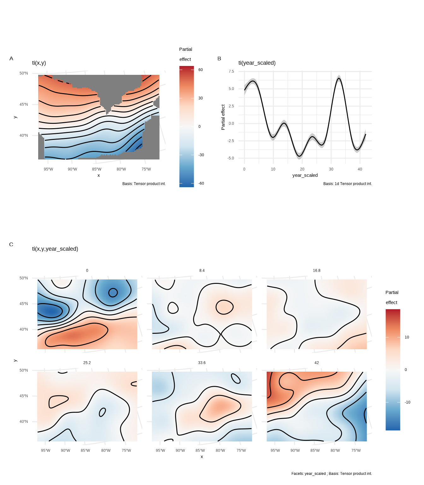
As you can see in Figure 7 B, the trend through time is not linear. If we want to extract information from this model to create a map similar to Figure 2, we can get fitted values for each year of each pixel and calculate average slopes and associated p-values testing if those average slopes are different from zero.
Note
This is possibly the most computationally intensive step but can possibly be sped up using multiple cores or by predicting over a regular sample of points rather than every point.

With the approach in Figure 8, we have the power to detect significant changes in the DOY to reach 50 GDD over time. The caveat here is that the relationship fit to time is not linear (see Figure 6 for an example), and Figure 8 just shows the average slopes over time.
Checking temporal autocorrelation
Checking residuals in a few random points to confirm that temporal autocorrelation is still not an issue.
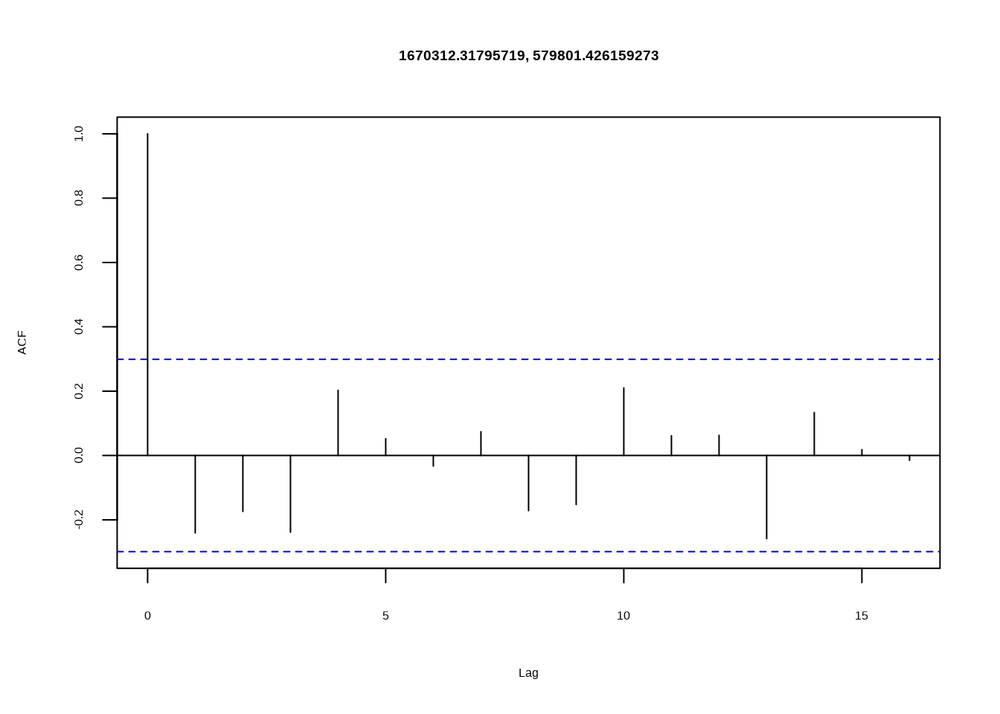
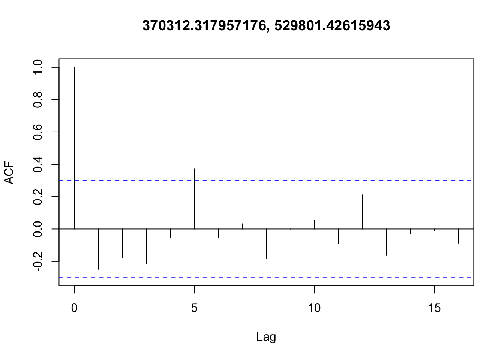
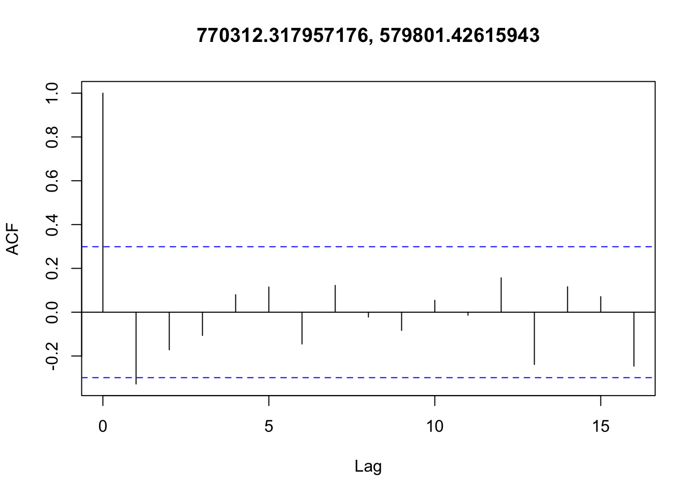
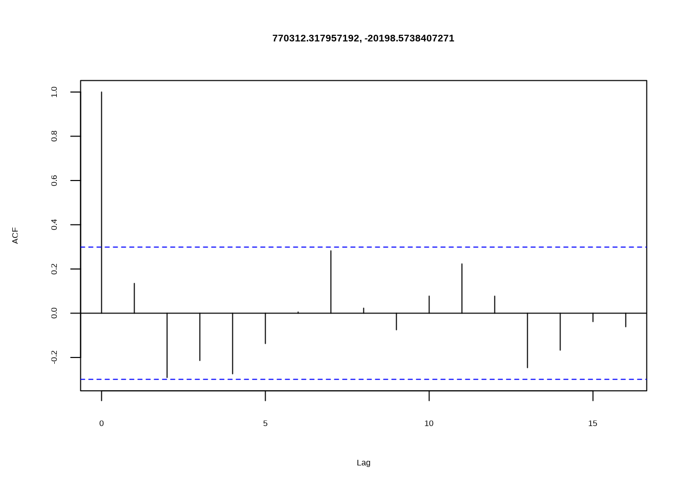
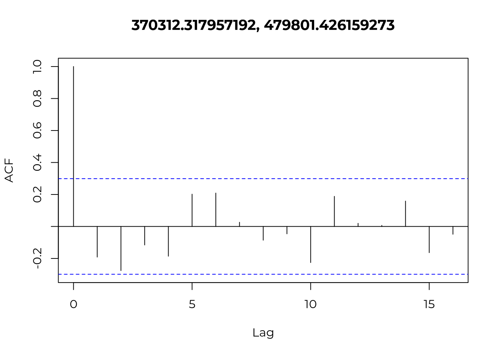
Accounting for spatial autocorrelation
The model described in Table 1 is fit with restricted maximum likelihood (REML). An alternative method, neighborhood cross validation (NCV) could be used to account for un-modeled short-range spatial autocorrelation (Wood 2024). A requirement for NCV is constructing a list object in R that defines “neighborhoods” around each point. NCV is a relatively new method (Wood (2024) is a preprint) and methods for automated creation of this list object are still in development.
Ideally, when fitting a GAM you should increase the number of knots for a smooth until the estimated degrees of freedom (edf) (the estimated wiggliness) is much less than the number of knots (k). Basically you want to give the spline enough flexibility that the penalized version can represent the “true” relationship. With REML and data with spatial autocorrelation there is a risk of overfitting—edf continues to grow as more and more knots are added and the smooth gets far too wiggly.
k' edf k-index p-value
ti(x,y) 24 23.759004 0.9467849 0
ti(year_scaled) 9 8.961478 0.6222833 0
ti(x,y,year_scaled) 216 159.986404 0.1410332 0As you can see above, k (24) is very close to edf (23.6) indicating that I haven’t given the GAM enough knots in the spatial dimension in this example. I can tell you that from some haphazard experimenting, overfitting does appear to be an issue that could potentially be solved by using NCV instead of REML.
As I get time to play with NCV more, I may add an example of it here for comparison, but I’m still figuring it out at this point.
References
Derringer, Jaime. 2018. “A Simple Correction for Non-Independent Tests.” https://doi.org/10.31234/osf.io/f2tyw.
Wood, Simon N. 2024. “On Neighbourhood Cross Validation.” https://doi.org/10.48550/arXiv.2404.16490.